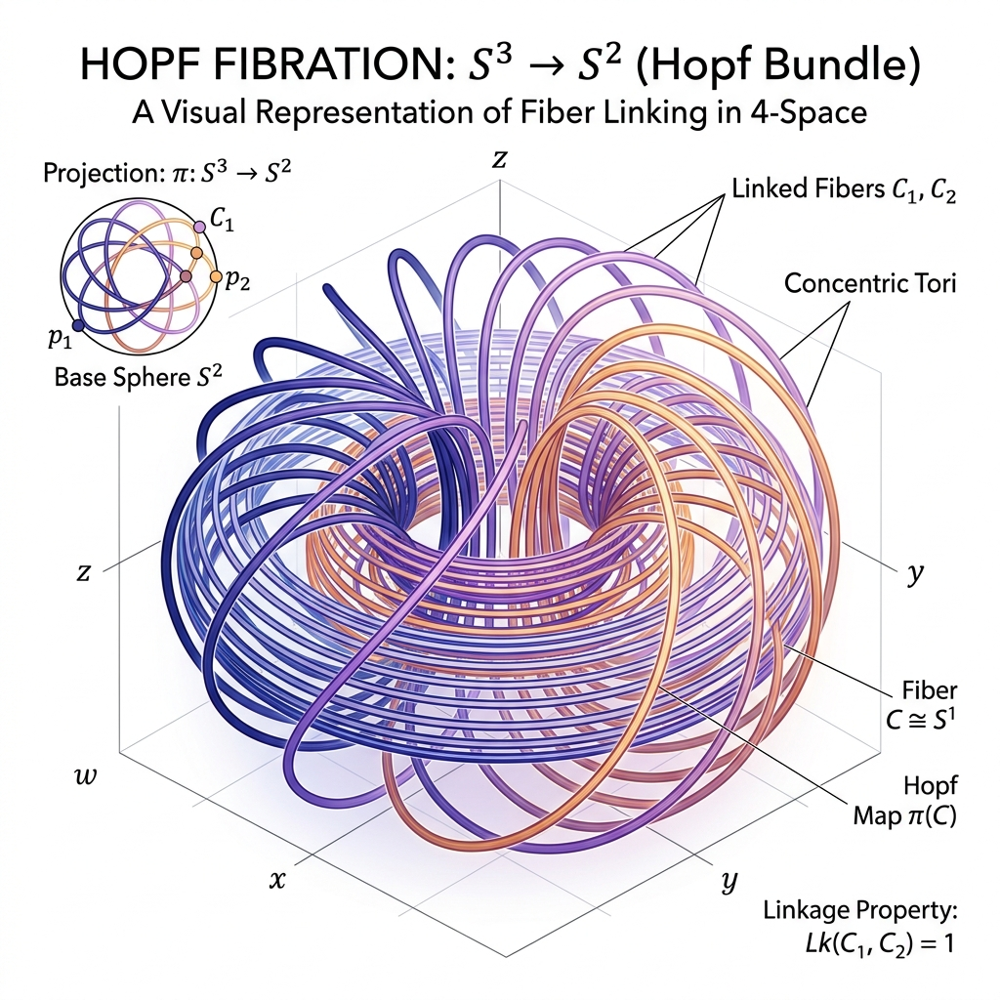

Hopf Fibration π₃(S²) ≅ ℤ

Mathematical Exposition
The Hopf Fibration is a fundamental fiber bundle in algebraic topology. It maps the 3-sphere $S^3$ to the 2-sphere $S^2$ such that the preimage of any point on $S^2$ is a circle $S^1$. It is classically represented as:
$$ S^1 \hookrightarrow S^3 \xrightarrow{p} S^2 $$Where $p: S^3 \to S^2$ is the projection map. In complex coordinates, if we identify $S^3$ with $\{ (z_0, z_1) \in \mathbb{C}^2 \mid |z_0|^2 + |z_1|^2 = 1 \}$ and $S^2$ with the Riemann sphere $\mathbb{C} \cup \{\infty\}$ (via stereographic projection), the Hopf map is simply $p(z_0, z_1) = z_0 / z_1$.
Homotopy Isomorphism Proof
One of the most important consequences of the Hopf Fibration is the proof that the third homotopy group of $S^2$ is isomorphic to the integers $\mathbb{Z}$. Because $p$ is a fiber bundle with fiber $S^1$, it induces a long exact sequence of homotopy groups:
$$ \dots \to \pi_3(S^1) \to \pi_3(S^3) \to \pi_3(S^2) \to \pi_2(S^1) \to \dots $$Since the circle $S^1$ has trivial homotopy groups in dimensions 2 and higher ($\pi_2(S^1) = 0$ and $\pi_3(S^1) = 0$), the sequence collapses to a simple isomorphism between $\pi_3(S^3)$ and $\pi_3(S^2)$:
$$ 0 \to \pi_3(S^3) \xrightarrow{p_*} \pi_3(S^2) \to 0 $$By the Hurewicz Theorem, the third homotopy group of the 3-sphere is isomorphic to the integers, generated by the identity map ($\pi_3(S^3) \cong \mathbb{Z}$). Thus, we obtain the isomorphism:
$$ \pi_3(S^2) \cong \mathbb{Z} $$This was a historical milestone because it showed that spheres can have non-trivial higher homotopy groups ($\pi_k(S^n) \neq 0$ for $k > n$). The generator of this group is the class of the Hopf map itself, which has a Hopf invariant of $1$. Geometrically, this invariant measures the linking number of any two circular fibers in $S^3$, which is always exactly $1$.
/-- The Hopf fibration S¹ → S³ → S² induces an isomorphism π₃(S³) ≃ π₃(S²). -/
noncomputable def pi3_hopf_iso_equiv (x3 : S3) :
π_ 3 S3 x3 ≃* π_ 3 S2 (hopfMap x3) :=
MulEquiv.ofBijective (HomotopyGroup.map hopfCMap rfl 3)
⟨hopf_pi3_injective x3, hopf_pi3_surjective x3⟩
lemma pi3_hopf_iso (x3 : S3) :
Nonempty (π_ 3 S3 x3 ≃* π_ 3 S2 (hopfMap x3)) :=
⟨pi3_hopf_iso_equiv x3⟩
/-- Homotopy groups of S² are independent of basepoint. -/
lemma pi3_S2_indep (x y : S2) :
Nonempty (π_ 3 S2 x ≃* π_ 3 S2 y) := by
have hx : ‖(x : EuclideanSpace ℝ (Fin 3))‖ = 1 := mem_sphere_zero_iff_norm.mp x.2
have hy : ‖(y : EuclideanSpace ℝ (Fin 3))‖ = 1 := mem_sphere_zero_iff_norm.mp y.2
obtain ⟨φ, hφ⟩ := exists_linearIsometryEquiv_map_eq x y hx hy
let φ_S2 := LinearIsometryEquiv.restrictSphere φ 1
have h_base : φ_S2 x = y := Subtype.ext hφ
exact ⟨HomotopyGroup.equivOfHomeomorph φ_S2 h_base 3⟩
/-- The main theorem: π₃(S²) is isomorphic to ℤ. -/
theorem pi3_sphere_two_mulEquiv_int (x : S2) :
Nonempty (HomotopyGroup (Fin 3) S2 x ≃* Multiplicative ℤ) := by
obtain ⟨iso_hopf⟩ := pi3_hopf_iso S3_basepoint
obtain ⟨iso_s3⟩ := pi3_sphere3_iso_int S3_basepoint
let x2_base := hopfMap S3_basepoint
have h_iso_base : Nonempty (π_ 3 S2 x2_base ≃* Multiplicative ℤ) :=
⟨iso_hopf.symm.trans iso_s3⟩
obtain ⟨iso_base_change⟩ := pi3_S2_indep x x2_base
obtain ⟨iso_final⟩ := h_iso_base
exact ⟨iso_base_change.trans iso_final⟩